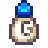

Goat Milk
| Goat Milk | ||||||||||||||||||||||||||||||||||
|  | ||||||||||||||||||||||||||||||||||
| The milk of a goat. | ||||||||||||||||||||||||||||||||||
| Information | ||||||||||||||||||||||||||||||||||
| Source | Goat | |||||||||||||||||||||||||||||||||
| Energy / Health |
|
|||||||||||||||||||||||||||||||||
|
||||||||||||||||||||||||||||||||||
|
||||||||||||||||||||||||||||||||||
Goat Milk is an animal product obtained from a Goat by using a Milk Pail.
When a goat has a sufficient friendship and mood level, it can produce a Large Goat Milk, which is more valuable.
Gifting
| Villager Reactions
| |
|---|---|
| Like | |
| Neutral | |
| Dislike | |
| Hate | |
Bundles
- Ten Milk (any size, including Goat Milk and Large Goat Milk) may be required for the
 Home Cook's Bundle on the Bulletin Board (Remixed).
Home Cook's Bundle on the Bulletin Board (Remixed).
Artisan Goods
- See also: Animal Products Profitability
Goat Milk can be used to make the following Artisan Goods. Note that regular Goat Milk always produces regular quality Goat Cheese, while Large Goat Milk always produces gold-quality Goat Cheese. The quality of the milk is not a factor.
Goat Cheese may be aged in Casks to increase its quality.
| Image | Name | Description | Ingredient | Equipment | Time | Sell Price | ||||
|---|---|---|---|---|---|---|---|---|---|---|
| Goat Cheese | Soft cheese made from goat's milk. | Cheese Press |
|
Recipes
Note: For all recipes requiring Milk, Large Milk, Goat Milk, or Large Goat Milk may also be used.
| Image | Name | Description | Ingredients | Energy / Health | Buff(s) | Buff Duration | Recipe Source(s) | Sell Price | |||
|---|---|---|---|---|---|---|---|---|---|---|---|
| Artichoke Dip | It's cool and refreshing. | N/A | N/A |
|
|||||||
| Chowder | A perfect way to warm yourself after a cold night at sea. |
|
|||||||||
| Complete Breakfast | You'll feel ready to take on the world! |
|
|||||||||
| Ice Cream | It's hard to find someone who doesn't like this. | N/A | N/A |
|
|||||||
| Lobster Bisque | This delicate soup is a secret family recipe of Willy's. |
|
|||||||||
| Miner's Treat | This should keep your energy up. | ||||||||||
| Omelet | It's super fluffy. | N/A | N/A |
|
|||||||
| Parsnip Soup | It's fresh and hearty. | N/A | N/A |
|
|||||||
| Pumpkin Pie | Silky pumpkin cream in a flaky crust. | N/A | N/A |
|
|||||||
| Pumpkin Soup | A seasonal favorite. |
|
|||||||||
| Rice Pudding | It's creamy, sweet, and fun to eat. | N/A | N/A |
|
|||||||
| Banana Pudding | A creamy dessert with a wonderful tropical flavor. |
|
Tailoring
Goat Milk is used in the spool of the Sewing Machine with Cloth in the feed to create a  Shirt. It is a white dye when used in the spool of the Sewing Machine with a dyeable clothing item in the feed.
Shirt. It is a white dye when used in the spool of the Sewing Machine with a dyeable clothing item in the feed.
Quests
Goat Milk is not used in any quests.
Secret
This page or section contains unmarked spoilers from update 1.6 of Stardew Valley. Players may want to avoid or be cautious toward reading this article/section. |
| Details |
|---|
| A goat milk put on a table or long table would be exchanged for a Mystery Box during the night of Winter 24th, the eve of Feast of the Winter Star. |
History
- 1.0: Introduced.
- 1.1: Increased value from 180g to 225g
- 1.4: Can now be used in Tailoring.
- 1.5: Can now be used in recipes requiring milk.
- 1.6: Dwarf no longer dislikes milk and is now neutral. Add a secret about Feast of the Winter Star.
| Animals and Produce | |
|---|---|
| Coop | Chicken (Egg • Large Egg • Brown Egg • Large Brown Egg) • Dinosaur (Dinosaur Egg) • Duck (Duck Egg • Duck Feather) • Golden Chicken (Golden Egg) • Rabbit (Wool • Rabbit's Foot) • Void Chicken (Void Egg) |
| Barn | Cow (Milk • Large Milk) • Goat (Goat Milk • Large Goat Milk) • Sheep (Wool) • Ostrich (Ostrich Egg) • Pig (Truffle) |
| Fish Pond | Fish (Roe) |
| Slime Hutch | Slimes (Slime • Slime Ball • Slime Egg) |
| Other | Cat • Dog • Horse • Turtle |